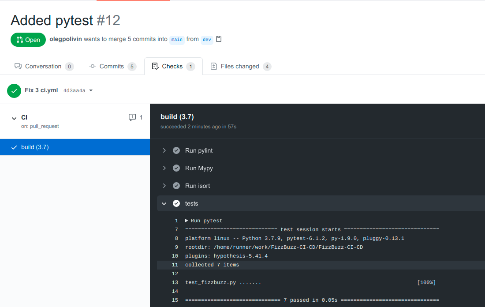
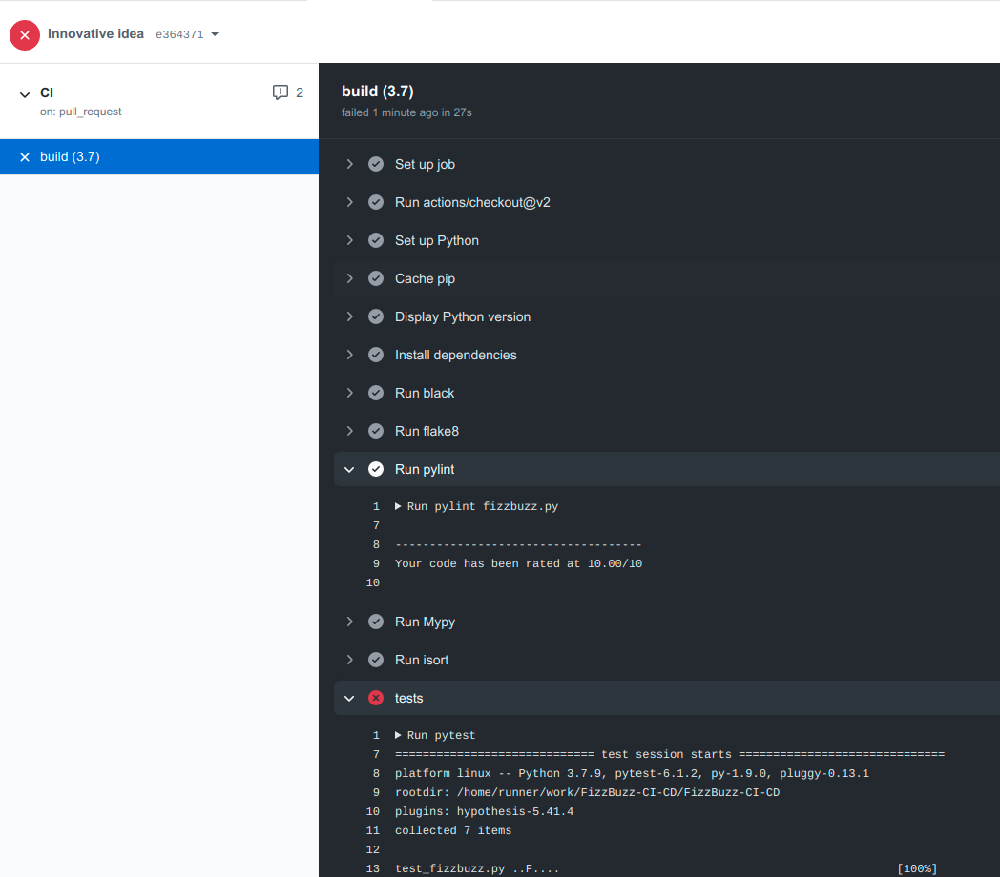

V. Testing the code¶
In this section I show how to integrate unit tests into the CI/CD pipeline, and
again we will make use of the ci.yml file. Personally, I like the pytest framework,
and that’s what I will use in this section.
Setting up the test¶
There is only one function to test (fizz_buzz.py), and it is quite simple.
I will put the test_fizzbuzz.py function directly into the root folder. The structure
of the current github project is as follows:
├── fizzbuzz.py
├── .github
│ └── workflows
│ └── ci.yml
├── .gitignore
├── .pre-commit-config.yaml
├── README.md
└── test_fizzbuzz.py
test_fizzbuzz.py contains:
import pytest
from fizzbuzz import fizz_buzz
inputs = [3, 5, 15, 4, 10, 115, 7]
outputs = ["fizz", "buzz", "fizzbuzz", "4", "buzz", "buzz", "7"]
@pytest.mark.parametrize("inp,out", zip(inputs, outputs))
def test_fizzbuzz(inp, out):
assert fizz_buzz(inp) == out
Append the code below to the ci.yml file:
- name: tests
run: pytest
Passing the test¶
And here is the result:
{kind=link}
But that’s the case when everything is ok. We are happy.
Failing the test¶
Now a new and innovative idea comes to my mind.
Why overcomplicate the code, why do we start from 15? Let’s
sort everything again, the code will like so nice! So, we change the fizzbuzz code
to the following one:
def fizz_buzz(num: int) -> str:
"""This is my great and neat function to solve the famous
Fizz Buzz problem.
:param num: That's the number which we want the answer for
:return: fizz, buzz, fizzbuzz or the number itself
"""
if num % 3 == 0:
return "fizz"
if num % 5 == 0:
return "buzz"
if num % 15 == 0:
return "fizzbuzz"
return str(num)
Great, let’s push and see that one test has failed:
{kind=link}
That is, by introducing unit tests into the CI/CD pipeline we were able to catch the
problem before merging pull request into the main branch.